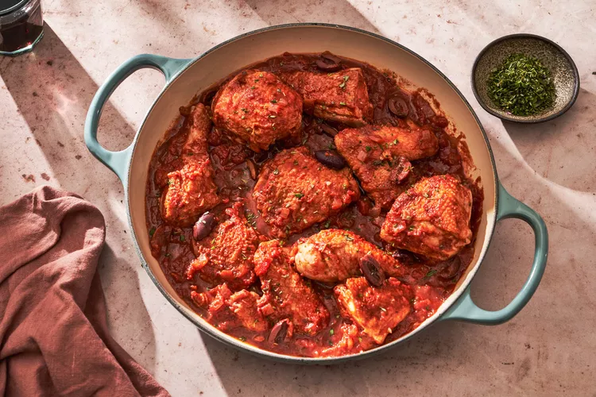

Chicken Provencal

Description
Chicken Provençal transforms regular old chicken thighs into a white wine-braised, olive-y, garlicky feat of culinary delight. Just add crusty bread and plenty of rosé.
The flavors are bold in chicken Provençal, a southern French braise with a sauce of tomatoes, garlic, rosemary, olives, and just enough anchovy paste to give the sauce depth.
Ingredients
- Vegetable Oil
- Diced Chicken
- Salt
- Black Pepper
- Chopped Onion
- Minced Garlic
- Red Wine
- Crushed Tomatoes
- Dried Rosemary
- Dried Thyme
- Black Olives
- Anchovy Paste
Steps
- In a large, deep frying pan, heat the oil over moderately high heat. Season the chicken with 1/4 teaspoon each of the salt and pepper and put it in the pan. Cook the chicken until browned, turning, about 8 minutes in all. Remove the chicken from the pan. Pour off all but 1 tablespoon fat from the pan.
- Reduce the heat to moderately low. Add the onion and the garlic and cook, stirring occasionally, until the onion starts to soften, about 3 minutes.
- Add the wine to the pan and simmer until reduced to about 1/4 cup, 1 to 2 minutes.
- Add the tomatoes, rosemary, thyme, olives, anchovy paste, and the remaining 1/2 teaspoon salt and simmer for 5 minutes.
- Add the chicken and any accumulated juices. Reduce the heat to low and simmer, covered, for 10 minutes.
- Add the remaining 1/4 teaspoon pepper and serve.